Many people around me have a hobby of raising flowers. Whether in the school dormitory, office, or balcony at home, plants are important partners of people.
I have conducted research on people's habits and behaviors in raising flowers. Usually, people's direct operation on potted plants is to water, fertilize, and loosen the soil on time; Different species have different demands on environmental conditions such as light, air, temperature, and humidity. Occasionally, there may be operations such as pest control, disease management, and deciduous tissue removal.
Mind Map
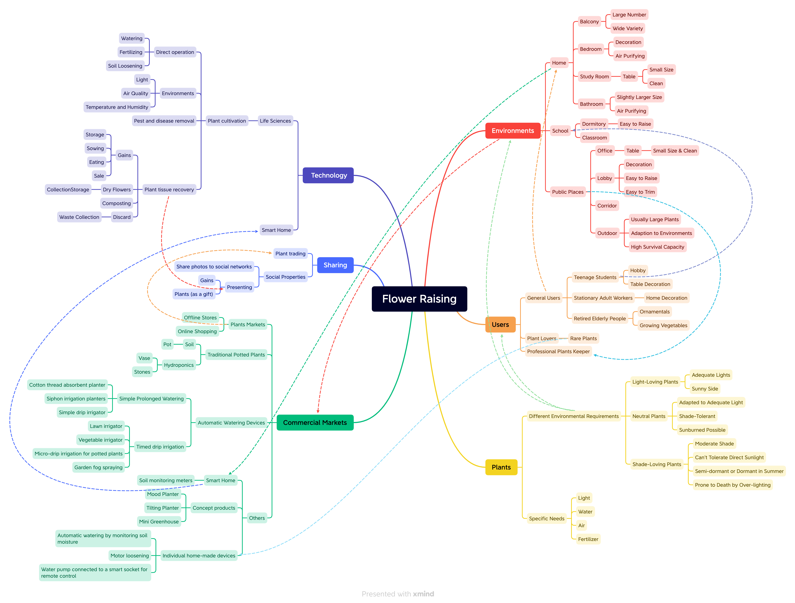
Design Positioning
In the process of raising flowers, not everyone can take good care of all the plants all the time. Different species have their own unique characters and needs.
Plants are my pets and friends. I believe plants are capable of expressing their needs for water and fertilizer like animals. They can recognize the most adequate environment at home and survive on their own.
Divergence and Model Making
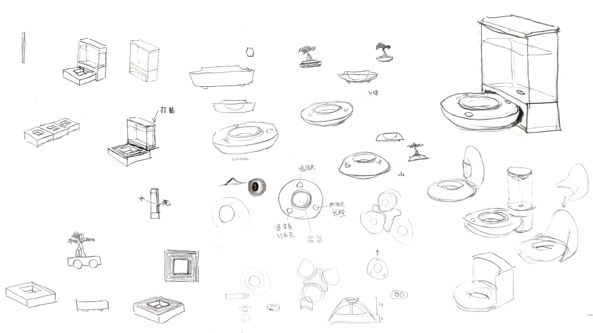
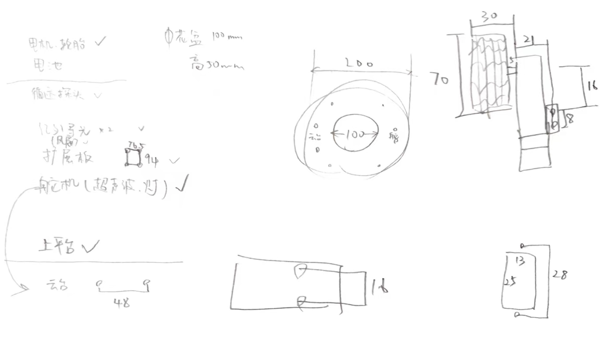

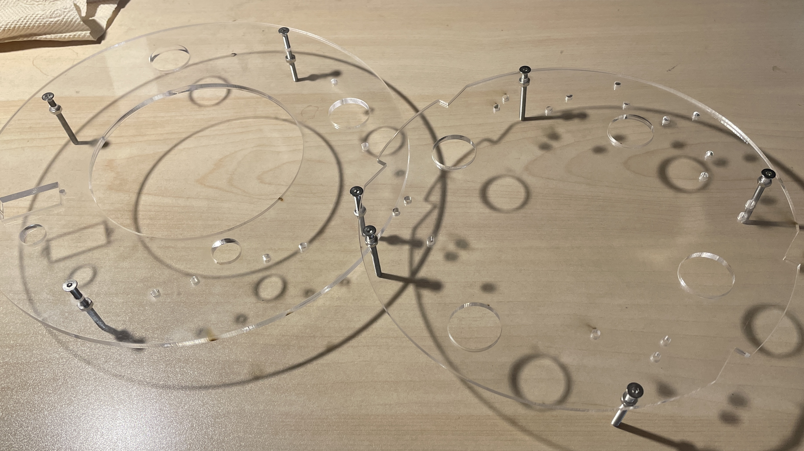
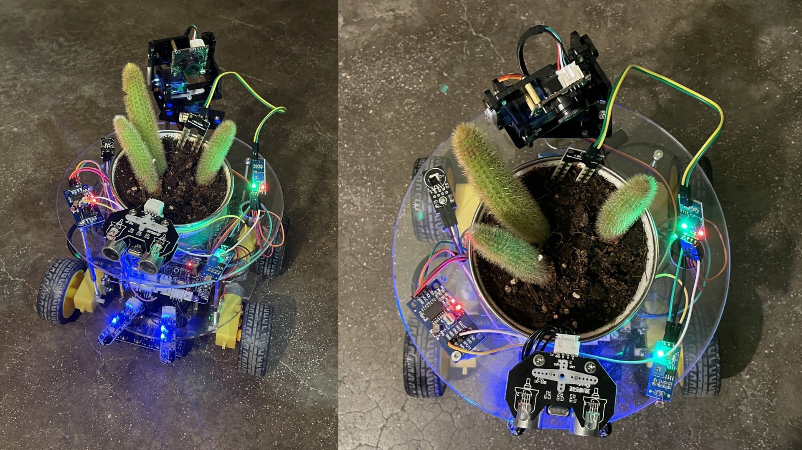
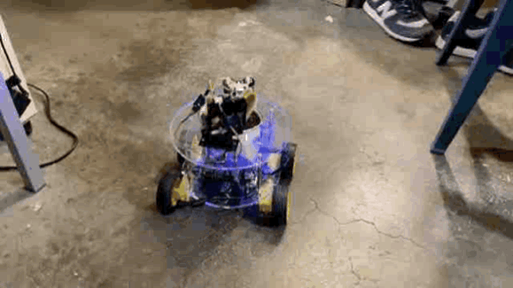
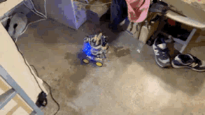
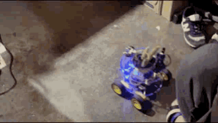
import RPi.GPIO as GPIO
import time
from random import random
IN1 = 20
IN2 = 21
IN3 = 19
IN4 = 26
ENA = 16
ENB = 13
key = 8
LdrSensorLeft = 7
LdrSensorRight = 6
AvoidSensorLeft = 12
AvoidSensorRight = 17
def init():
global pwm_ENA
global pwm_ENB
GPIO.setup(ENA,GPIO.OUT,initial=GPIO.HIGH)
GPIO.setup(IN1,GPIO.OUT,initial=GPIO.LOW)
GPIO.setup(IN2,GPIO.OUT,initial=GPIO.LOW)
GPIO.setup(ENB,GPIO.OUT,initial=GPIO.HIGH)
GPIO.setup(IN3,GPIO.OUT,initial=GPIO.LOW)
GPIO.setup(IN4,GPIO.OUT,initial=GPIO.LOW)
GPIO.setup(key,GPIO.IN)
GPIO.setup(AvoidSensorLeft,GPIO.IN)
GPIO.setup(AvoidSensorRight,GPIO.IN)
pwm_ENA = GPIO.PWM(ENA, 2000)
pwm_ENB = GPIO.PWM(ENB, 2000)
pwm_ENA.start(0)
pwm_ENB.start(0)
return pwm_ENA, pwm_ENB
def run():
GPIO.output(IN1, GPIO.HIGH)
GPIO.output(IN2, GPIO.LOW)
GPIO.output(IN3, GPIO.HIGH)
GPIO.output(IN4, GPIO.LOW)
pwm_ENA.ChangeDutyCycle(10)
pwm_ENB.ChangeDutyCycle(10)
def back():
GPIO.output(IN1, GPIO.LOW)
GPIO.output(IN2, GPIO.HIGH)
GPIO.output(IN3, GPIO.LOW)
GPIO.output(IN4, GPIO.HIGH)
pwm_ENA.ChangeDutyCycle(8)
pwm_ENB.ChangeDutyCycle(8)
def left():
GPIO.output(IN1, GPIO.LOW)
GPIO.output(IN2, GPIO.LOW)
GPIO.output(IN3, GPIO.HIGH)
GPIO.output(IN4, GPIO.LOW)
pwm_ENA.ChangeDutyCycle(0)
pwm_ENB.ChangeDutyCycle(8)
def right():
GPIO.output(IN1, GPIO.HIGH)
GPIO.output(IN2, GPIO.LOW)
GPIO.output(IN3, GPIO.LOW)
GPIO.output(IN4, GPIO.LOW)
pwm_ENA.ChangeDutyCycle(8)
pwm_ENB.ChangeDutyCycle(0)
def spin_left():
GPIO.output(IN1, GPIO.LOW)
GPIO.output(IN2, GPIO.HIGH)
GPIO.output(IN3, GPIO.HIGH)
GPIO.output(IN4, GPIO.LOW)
pwm_ENA.ChangeDutyCycle(8)
pwm_ENB.ChangeDutyCycle(8)
def spin_right():
GPIO.output(IN1, GPIO.HIGH)
GPIO.output(IN2, GPIO.LOW)
GPIO.output(IN3, GPIO.LOW)
GPIO.output(IN4, GPIO.HIGH)
pwm_ENA.ChangeDutyCycle(8)
pwm_ENB.ChangeDutyCycle(8)
def brake():
GPIO.output(IN1, GPIO.LOW)
GPIO.output(IN2, GPIO.LOW)
GPIO.output(IN3, GPIO.LOW)
GPIO.output(IN4, GPIO.LOW)
def random_walk():
randomVal = random()
if randomVal < 0.1:
spin_left()
elif randomVal < 0.9:
run()
else:
spin_rightimport RPi.GPIO as GPIO
import time
IN1 = 20
IN2 = 21
IN3 = 19
IN4 = 26
ENA = 16
ENB = 13
key = 8
#TrackSensorLeftPin1 TrackSensorLeftPin2 TrackSensorRightPin1 TrackSensorRightPin2
# 3 5 4 18
TrackSensorLeftPin1 = 3
TrackSensorLeftPin2 = 5
TrackSensorRightPin1 = 4
TrackSensorRightPin2 = 18
GPIO.setmode(GPIO.BCM)
GPIO.setwarnings(False)
def init():
global pwm_ENA
global pwm_ENB
GPIO.setup(ENA,GPIO.OUT,initial=GPIO.HIGH)
GPIO.setup(IN1,GPIO.OUT,initial=GPIO.LOW)
GPIO.setup(IN2,GPIO.OUT,initial=GPIO.LOW)
GPIO.setup(ENB,GPIO.OUT,initial=GPIO.HIGH)
GPIO.setup(IN3,GPIO.OUT,initial=GPIO.LOW)
GPIO.setup(IN4,GPIO.OUT,initial=GPIO.LOW)
GPIO.setup(key,GPIO.IN)
GPIO.setup(TrackSensorLeftPin1,GPIO.IN)
GPIO.setup(TrackSensorLeftPin2,GPIO.IN)
GPIO.setup(TrackSensorRightPin1,GPIO.IN)
GPIO.setup(TrackSensorRightPin2,GPIO.IN)
pwm_ENA = GPIO.PWM(ENA, 2000)
pwm_ENB = GPIO.PWM(ENB, 2000)
pwm_ENA.start(0)
pwm_ENB.start(0)
def run(leftspeed, rightspeed):
GPIO.output(IN1, GPIO.HIGH)
GPIO.output(IN2, GPIO.LOW)
GPIO.output(IN3, GPIO.HIGH)
GPIO.output(IN4, GPIO.LOW)
pwm_ENA.ChangeDutyCycle(leftspeed)
pwm_ENB.ChangeDutyCycle(rightspeed)
def back(leftspeed, rightspeed):
GPIO.output(IN1, GPIO.LOW)
GPIO.output(IN2, GPIO.HIGH)
GPIO.output(IN3, GPIO.LOW)
GPIO.output(IN4, GPIO.HIGH)
pwm_ENA.ChangeDutyCycle(leftspeed)
pwm_ENB.ChangeDutyCycle(rightspeed)
def left(leftspeed, rightspeed):
GPIO.output(IN1, GPIO.LOW)
GPIO.output(IN2, GPIO.LOW)
GPIO.output(IN3, GPIO.HIGH)
GPIO.output(IN4, GPIO.LOW)
pwm_ENA.ChangeDutyCycle(leftspeed)
pwm_ENB.ChangeDutyCycle(rightspeed)
def right(leftspeed, rightspeed):
GPIO.output(IN1, GPIO.HIGH)
GPIO.output(IN2, GPIO.LOW)
GPIO.output(IN3, GPIO.LOW)
GPIO.output(IN4, GPIO.LOW)
pwm_ENA.ChangeDutyCycle(leftspeed)
pwm_ENB.ChangeDutyCycle(rightspeed)
def spin_left(leftspeed, rightspeed):
GPIO.output(IN1, GPIO.LOW)
GPIO.output(IN2, GPIO.HIGH)
GPIO.output(IN3, GPIO.HIGH)
GPIO.output(IN4, GPIO.LOW)
pwm_ENA.ChangeDutyCycle(leftspeed)
pwm_ENB.ChangeDutyCycle(rightspeed)
def spin_right(leftspeed, rightspeed):
GPIO.output(IN1, GPIO.HIGH)
GPIO.output(IN2, GPIO.LOW)
GPIO.output(IN3, GPIO.LOW)
GPIO.output(IN4, GPIO.HIGH)
pwm_ENA.ChangeDutyCycle(leftspeed)
pwm_ENB.ChangeDutyCycle(rightspeed)
def brake():
GPIO.output(IN1, GPIO.LOW)
GPIO.output(IN2, GPIO.LOW)
GPIO.output(IN3, GPIO.LOW)
GPIO.output(IN4, GPIO.LOW)
def key_scan():
while GPIO.input(key):
pass
while not GPIO.input(key):
time.sleep(0.01)
if not GPIO.input(key):
time.sleep(0.01)
while not GPIO.input(key):
pass
time.sleep(2)
try:
init()
key_scan()
while True:
TrackSensorLeftValue1 = GPIO.input(TrackSensorLeftPin1)
TrackSensorLeftValue2 = GPIO.input(TrackSensorLeftPin2)
TrackSensorRightValue1 = GPIO.input(TrackSensorRightPin1)
TrackSensorRightValue2 = GPIO.input(TrackSensorRightPin2)
if (TrackSensorLeftValue1 == False or TrackSensorLeftValue2 == False) and TrackSensorRightValue2 == False:
spin_right(100, 100)
time.sleep(0.08)
elif TrackSensorLeftValue1 == False and (TrackSensorRightValue1 == False or TrackSensorRightValue2 == False):
spin_left(100, 100)
time.sleep(0.08)
elif TrackSensorLeftValue1 == False:
spin_left(80, 80)
elif TrackSensorRightValue2 == False:
spin_right(80, 80)
elif TrackSensorLeftValue2 == False and TrackSensorRightValue1 == True:
left(0,90)
elif TrackSensorLeftValue2 == True and TrackSensorRightValue1 == False:
right(90, 0)
elif TrackSensorLeftValue2 == False and TrackSensorRightValue1 == False:
run(100, 100)
except KeyboardInterrupt:
pass
pwm_ENA.stop()
pwm_ENB.stop()
GPIO.cleanup()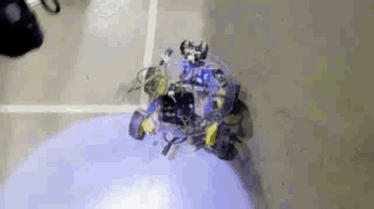
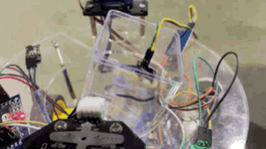
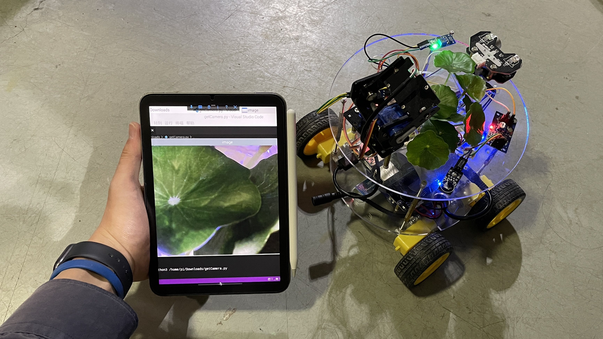
import cv2
if __name__ == '__main__':
cap = cv2.VideoCapture(0)
cap.set(cv2.CAP_PROP_FOURCC, cv2.VideoWriter.fourcc('M', 'J', 'P', 'G'))
cap.set(cv2.CAP_PROP_FRAME_WIDTH, 640)
cap.set(cv2.CAP_PROP_FRAME_HEIGHT, 480)
width = cap.get(3)
height = cap.get(4)
try:
while True:
ret, frame = cap.read()
if not ret:
print("get camera frame is empty")
break
str = "image"
cv2.imshow(str, frame)
key = cv2.waitKey(10) & 0xff
if key == ord('q'):
break
finally:
cap.release()
cv2.destroyAllWindows()import PCF8591 as ADC
import RPi.GPIO as GPIO
import time
DO = 17
GPIO.setmode(GPIO.BCM)
def setup():
ADC.setup(0x48)
GPIO.setup(DO, GPIO.IN)
def read():
photoresistor = ADC.read(0)
humidity = ADC.read(3)
print("Photoresistor: {}\tHumidity: {}" \
.format(photoresistor, humidity))
return photoresistor, humidity
def loop():
while True:
read()
time.sleep(0.5)
if __name__ == '__main__':
try:
setup()
loop()
except KeyboardInterrupt:
pass
(analog to digital signals conversion)
And Watering
#Emotionally Intelligent Flower Raising Device by Bob Tianqi Wei
import motion
import humidity
import getCamera
import temperature
import RPi.GPIO as GPIO
import time
LIGHT_LIM, DRY_LIM = 10, 100
LIGHT_INF, DRY_INF = 254, 150
IN1 = 20
IN2 = 21
IN3 = 19
IN4 = 26
ENA = 16
ENB = 13
LED_R = 22
LED_G = 27
LED_B = 24
key = 8
AvoidSensorLeft = 12
AvoidSensorRight = 17
GPIO.setmode(GPIO.BCM)
GPIO.setwarnings(False)
def init():
global pwm_ENA
global pwm_ENB
pwm_ENA, pwm_ENB = motion.init()
humidity.setup()
temperature.setup()
GPIO.setup(LED_R, GPIO.OUT)
GPIO.setup(LED_G, GPIO.OUT)
GPIO.setup(LED_B, GPIO.OUT)
def water():
print("Get some water!")
pass
try:
init()
lightTime, dryTime = 0, 0
getLight = True
while True:
photoresistor, humidityValue = humidity.read()
temperatureValue = temperature.get()
LeftSensorValue = GPIO.input(AvoidSensorLeft);
RightSensorValue = GPIO.input(AvoidSensorRight);
if humidityValue > DRY_INF:
dryTime += 1
if dryTime > DRY_LIM:
water()
dryTime = 0
if getLight:
if photoresistor < LIGHT_INF:
lightTime += 1
else:
if photoresistor > LIGHT_INF:
lightTime -= 1
if getLight:
if lightTime > LIGHT_LIM:
getLight = False
if photoresistor < LIGHT_INF:
# White: Need Light and has light.
GPIO.output(LED_R, GPIO.HIGH)
GPIO.output(LED_G, GPIO.HIGH)
GPIO.output(LED_B, GPIO.HIGH)
else:
# Blue: Need Light but no light.
GPIO.output(LED_R, GPIO.LOW)
GPIO.output(LED_G, GPIO.LOW)
GPIO.output(LED_B, GPIO.HIGH)
else:
if lightTime < 0:
getLight = True
if photoresistor < LIGHT_INF:
# RED: Don't need light but has light.
GPIO.output(LED_R, GPIO.HIGH)
GPIO.output(LED_G, GPIO.LOW)
GPIO.output(LED_B, GPIO.LOW)
else:
# Off: Don't need light and has no light.
GPIO.output(LED_R, GPIO.LOW)
GPIO.output(LED_G, GPIO.LOW)
GPIO.output(LED_B, GPIO.LOW)
if LeftSensorValue == True and RightSensorValue == True:
if (getLight and photoresistor < LIGHT_INF) or (not getLight and photoresistor > LIGHT_INF):
motion.brake()
else:
motion.random_walk()
elif LeftSensorValue == True and RightSensorValue == False:
motion.spin_left()
elif RightSensorValue == True and LeftSensorValue == False:
motion.spin_right()
elif RightSensorValue == False and LeftSensorValue == False:
motion.spin_right()
print("Light Time: {}\tDry Time: {}".format(lightTime, dryTime))
# time.sleep(0.5)
except KeyboardInterrupt:
pass
pwm_ENA.stop()
pwm_ENB.stop()
GPIO.cleanup()
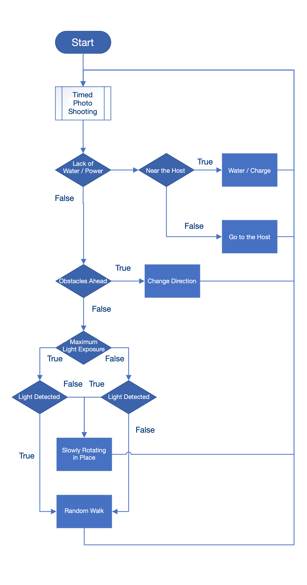


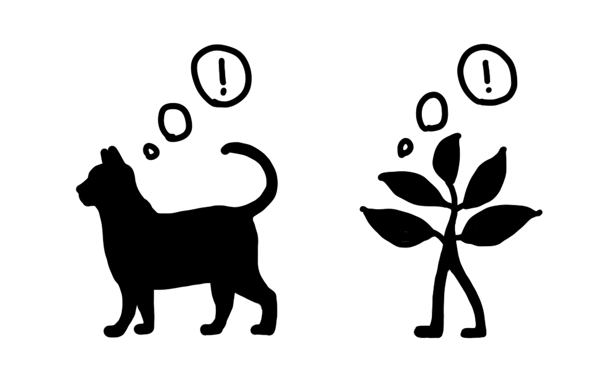
Plants are no longer dispensable decorations. This machine enables plants to actively seek out suitable environments at home.
This device allows plants to interact with people and actively adapt to their environment at home, just like animals.
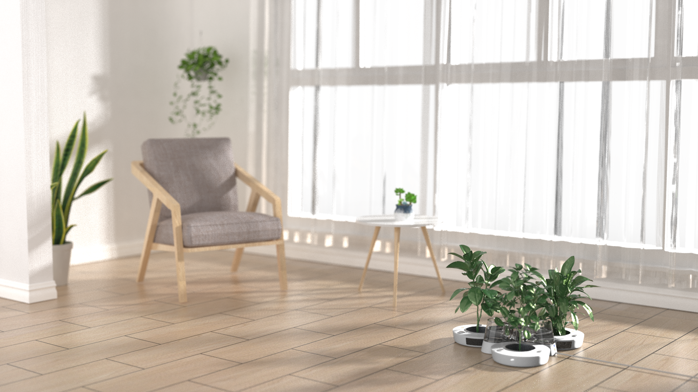
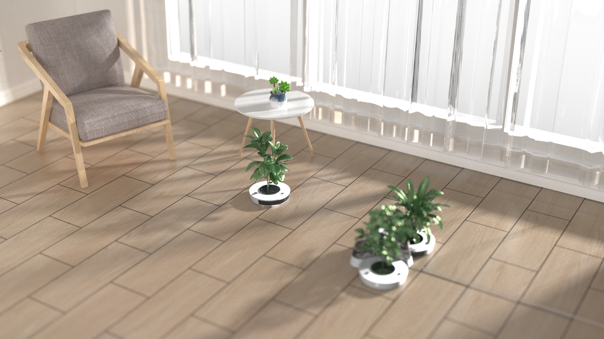
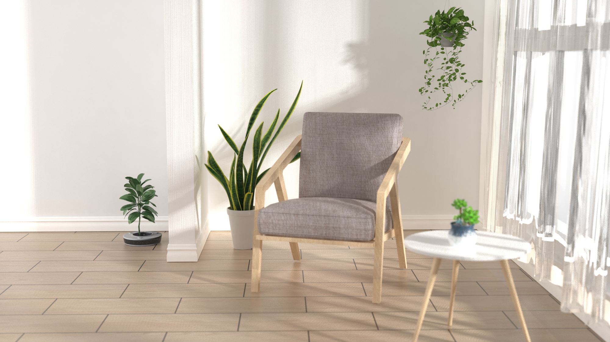
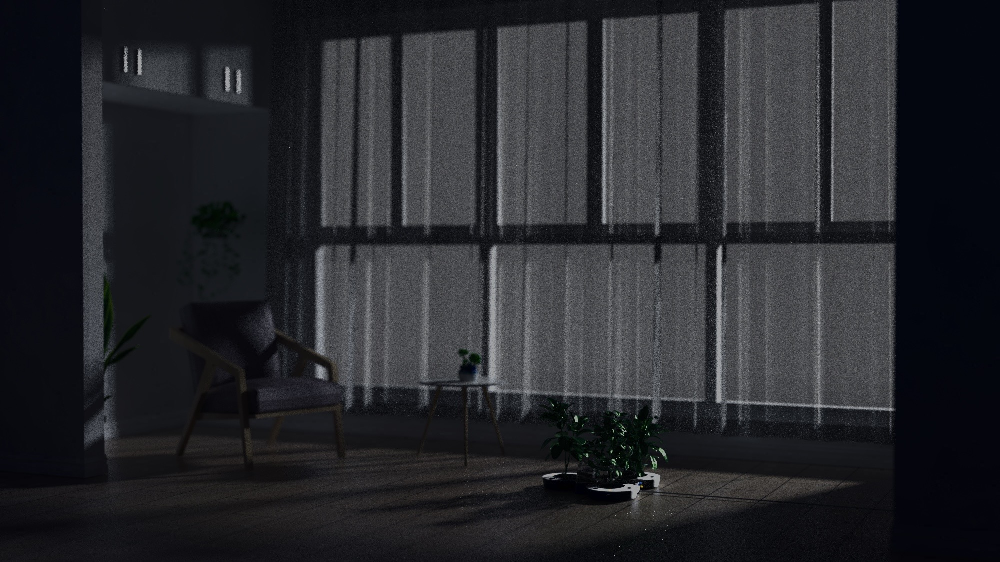
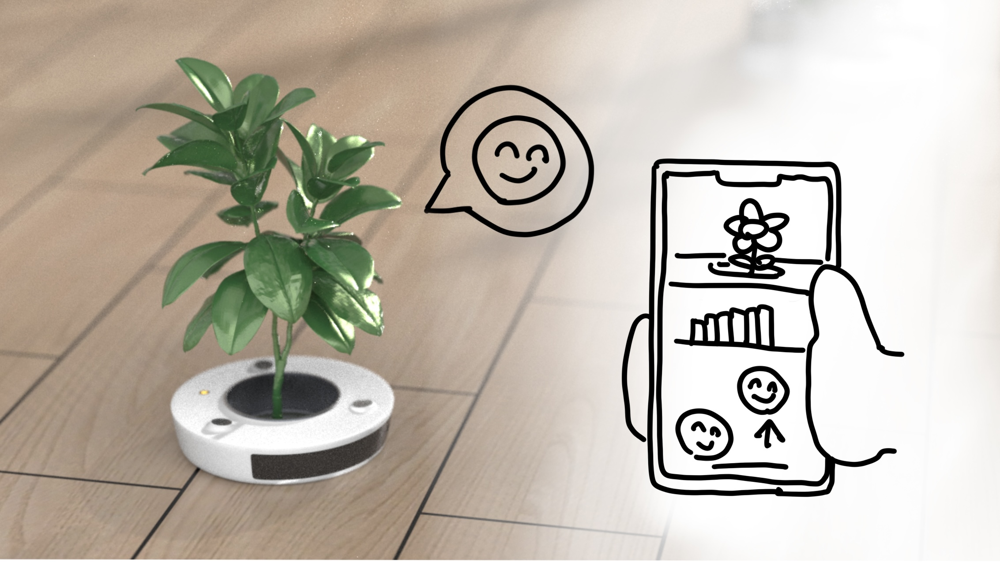
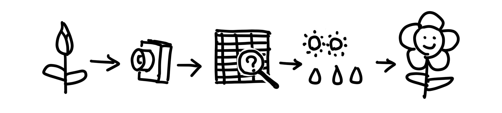
Interact with users like animal pets
(voice, mobile app)
The camera identifies the plant species and finds the corresponding cultivation requirements in the database. It will record the growing status, and adjusts the cultivation plan and environmental conditions.
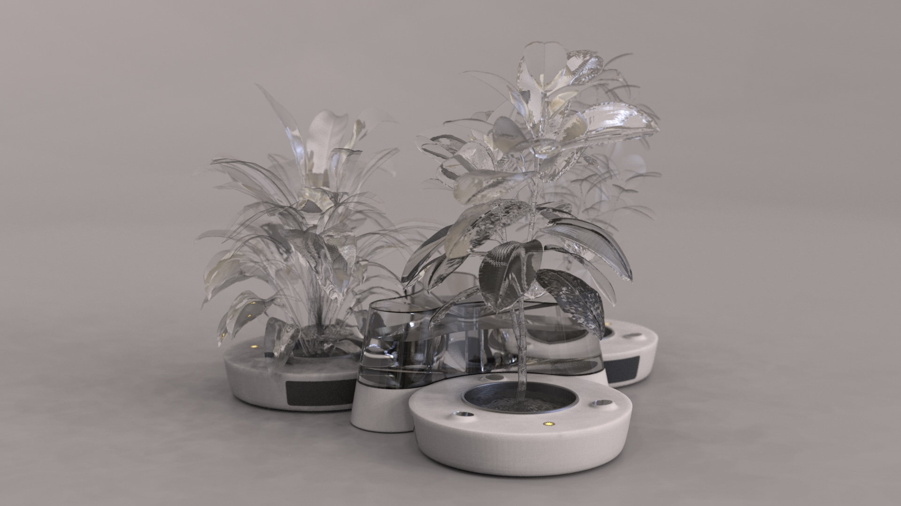
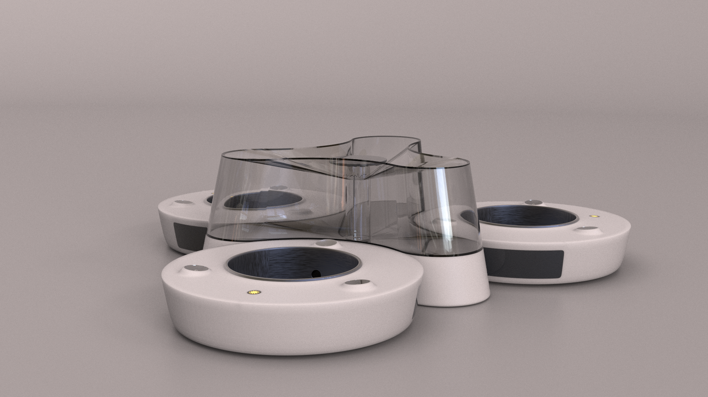
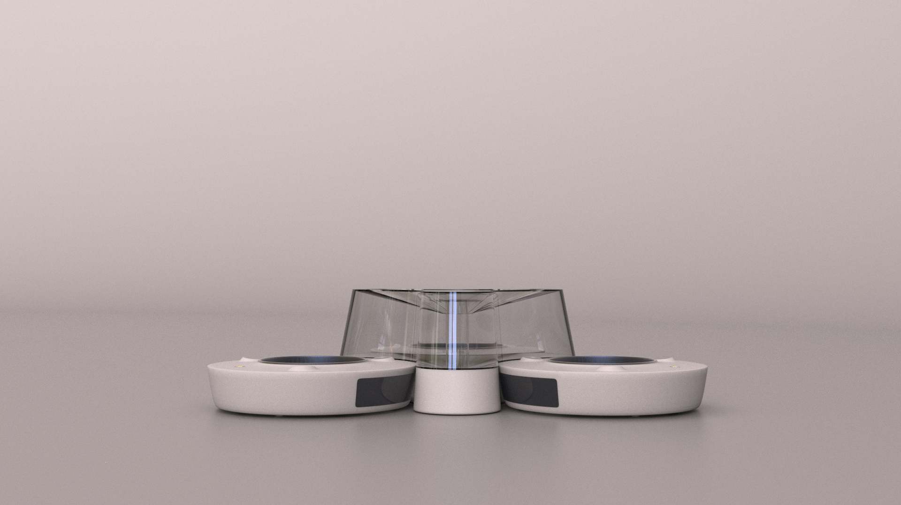
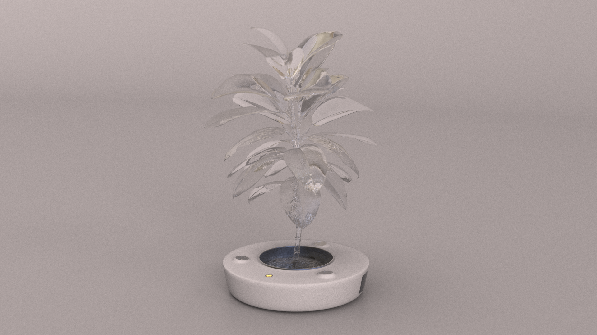
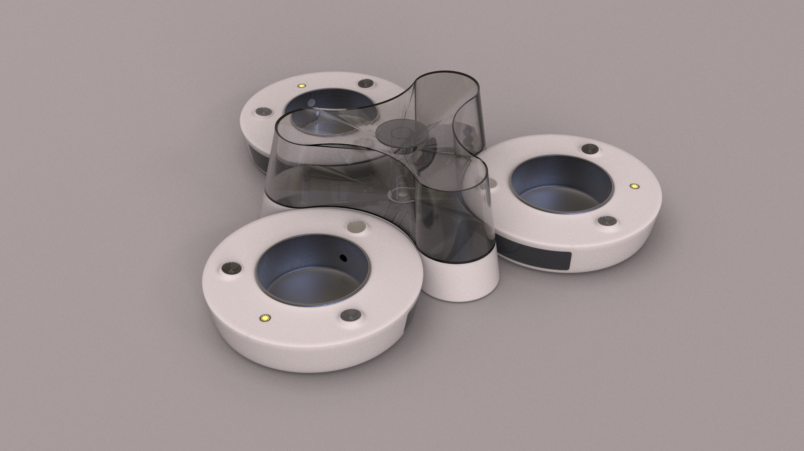
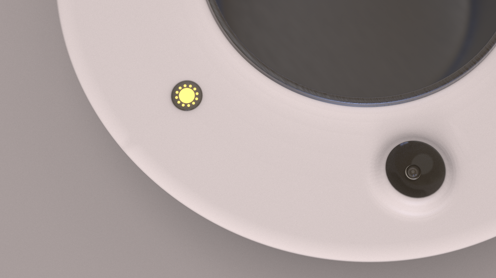
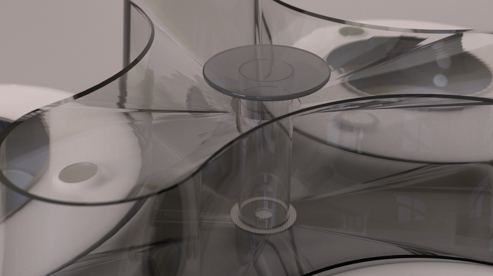
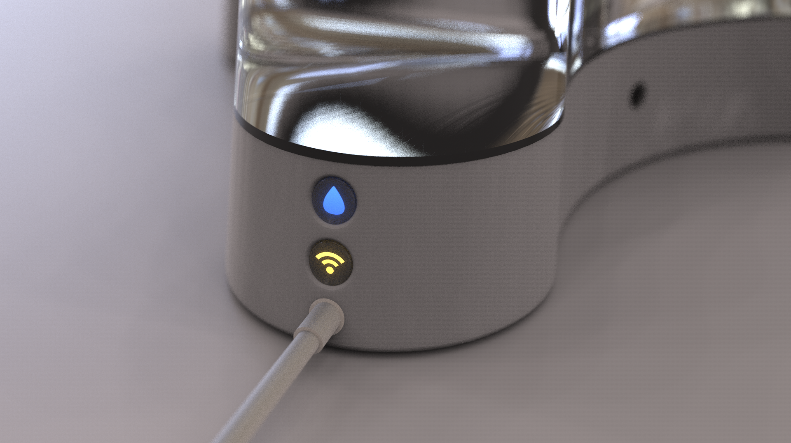